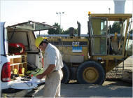

Oregon Department of Transportation
The Oregon Department of Transportation has hired Bluedot for numerous projects. In each case the work was performed to exacting ODOT standards. Work assignments typically include establishment of survey control on a geodetic datum, pre-design topographic base mapping, recovery of monuments and resolution of the highway right-of-way, preparation of right-of-way strip maps and legal descriptions for property acquisition, and filing pre- and post-construction Records of Survey. Final products are delivered in the ODOT preferred Microstation and Inroads environments.
Central Douglas County Bridges
Roseburg, Oregon
This OTIA project was a pre-design and boundary survey of over 6000 Linear Feet (LF) of highway adjacent to three roadway bridges along Interstate-5.
Hwy 20 Pedestrian Improvements
Lebanon, Oregon
This ODOT Highway and Pedestrian Improvement project consisted of widening the existing roadway and constructing sidewalks along Highway 20 as it transitioned from the urban/residential area into the city limits of downtown Lebanon. Bluedot was a sub-consultant to URS Engineers, Inc. for this project.
Hwy 99E Pedestrian Improvements
Tangent, Oregon
The scope for this ODOT Highway and Pedestrian Improvement project included widening the existing roadway and constructing sidewalks along Highway 99W north of the town of Tangent. Bluedot performed this work as a sub-consultant to URS Engineers, Inc.
Highway 208 Pedestrian Improvements
Sweet Home, Oregon
This project involved replacing and/or improving a large portion of the storm system and pedestrian walkway at Highway 208 (Holly Rd.) and Hwy 20, in a "residential transitioning to commercial" area of Sweet Home.
Highway 126 Passing Lanes
Suttle Lake to Sisters, Oregon
Bluedot provided surveying for this ODOT project, to widen Highway 18 northwest of Sisters in order to provide passing lanes. Bluedot performed this work as a sub-consultant to HDR Engineers, Inc.
Highway 99W Locke Creek Bridge Replacement
Benton County, Oregon
Bluedot surveyed for this bridge replacement project located on Hwy 99W north of Corvallis. The project replaced an existing two-lane bridge with a four-lane bridge. Cross sectioning of the creek was accomplished to aid the hydraulic study. Bluedot performed this work as a sub-consultant to H.W. Lochner, Inc.
Oregon Bridge Delivery Partners (OBDP)
OBDP is a joint venture of HDR and Fluor, and is under contract to the Oregon Department of Transportation (ODOT) and its Highway Division to accelerate the completion and manage the quality of projects in the OTIA III State Bridge Delivery Program. Bluedot has completed numerous projects for OBDP.
Each of these projects consisted of a bridge replacement or repair project performed to ODOT technical standards. The final products were delivered in the ODOT preferred Microstation and Inroads environments.
OBDP also added its own project management hurdles. Work assignments typically included establishment of survey control on a geodetic datum, pre-design topographic base mapping including hydraulic cross sections, recovery of monuments and resolution of the highway right-of-way, preparation of right-of-way strip maps and legal descriptions for property acquisition, and filing of pre-and post-construction Records of Survey.
Bundle A05; Hwy 26 Marks Creek Bridges
Crook County, Oregon
Bluedot surveyed two bridges, together with roadway approaches and hydraulic cross sections. The project was located in rural Crook County over Marks Creek. Bluedot performed this work as a sub-consultant to URS Corporation.
Bundle A05; Hwy 26 Ochoco River Bridge
Prineville, Oregon
Bluedot surveyed the bridge over the Ochoco River, within the Prineville city limits. Bluedot performed this work as a sub-consultant to URS Corporation.
Bundle 309; Bridges
Cottage Grove, Oregon
This repair/replacement project of six bridges along Interstate 5, consisted of a total of six existing concrete span bridges at the Willamette River (Coast Fork), at Latham Road, and at Martin Creek. Bluedot performed this work as a sub-consultant to Berger-Abam, Inc.
Bundle 209; Interstate 84 Bridges
Dodson (MP 35), Moffett Creek (MP39), and Tanner Creek (MP40), Oregon
Bluedot Group surveyed for this project. Scope of work consisted of repairing four bridges and the replacement of a fifth. Three distinct survey areas were included. The survey included acquisition of aerial mapping over a portion of the project area and inclusion of that data in the project base map. Bluedot performed this work as a sub-consultant for Parsons, Brinkerhoff, Quade & Douglas.
Bundle 208; Interstate 84 Bridge at Exit 64
Hood River, Oregon
This project was for the replacement of an existing concrete span bridge for Interstate 84 over the Exit 64 underpass to the Toll Bridge. The work included augmenting aerial mapping with detailed ground mapping. Bluedot performed this work as a sub-consultant to URS Corporation.
Bundle 313; Interstate 5 Bridge at Exit 45
Rogue River, Oregon
This project focused on the vertical realignment of an on-ramp access road passing under Interstate-5. Bluedot was a sub-consultant to Parsons, Brinkerhoff, Quade & Douglas.
Bundle A05; Hwy 26 Marks Creek Bridges
Crook County, Oregon
Bluedot surveyed two bridges, together with roadway approaches and hydraulic cross sections, in rural Crook County over Marks Creek. Bluedot performed this work as a sub-consultant to URS Corporation.
Bundle A05; Hwy 26 Ochoco River Bridge
Prineville, Oregon
Bluedot surveyed the bridge over the Ochoco River within the Prineville city limits. Bluedot performed this work as a sub-consultant to URS Corporation.
Bundle 309; Bridges
Cottage Grove, Oregon
This project was for the repair/replacement of six bridges along Interstate -5 consisting of a total of six existing concrete span bridges at the Willamette River (Coast Fork), at Latham Road, and at Martin Creek. Bluedot performed this work as a sub-consultant to Berger Abam, Inc.
Bundle 209; Interstate 84 Bridges
Dodson (MP 35), Moffett Creek (MP39), and Tanner Creek (MP40), Oregon
This project was for the repair of four bridges and the replacement of a fifth. Three distinct survey areas were included. The survey included acquisition of aerial mapping over a portion of the project area and inclusion of that data in the project basemap. Bluedot was a sub-consultant to Parsons, Brinkerhoff, Quade & Douglas.
Bundle 208; Interstate 84 Bridge at Exit 64
Hood River, Oregon
This project was for the replacement an existing concrete span bridge for Interstate 84 over the Exit 64 underpass to the Toll Bridge. The work included augmenting aerial mapping with detailed ground mapping. Bluedot was a subconsultant to URS Corporation for this project.
Bundle 313; Interstate 5 Bridge at Exit 45
Rogue River, Oregon
This project was for the vertical realignment of an on-ramp access road passing under Interstate-5. Bluedot was a subconsultant to Parsons, Brinkerhoff, Quade & Douglas for this project.
Public Agencies
Port of Portland On-Call Survey Contract
Oregon
Since 2004, Bluedot has provided on-call survey services to the Port of Portland. Typical assignments include QA/QC verification, quantity, and "as-constructed" surveys in support of runway and taxiway improvements within the secure Air Operations Area of Portland International Airport. Our field crews work closely with Port construction inspectors to ensure quality construction products. All work was done according to the Port of Portland's stringent surveying and construction tolerances, and under FAA security. Drawings are prepared using the Port's customized tools within the AutoCAD environment and adhere to the Port's drafting standards. Field crews work closely with the Port's Surveyor to control management and survey costs on this contract.
FAA Prineville Airport Runway Improvements and Obstruction Survey
Bluedot Group mapped the active runway and taxiway and performed an obstruction survey to FAA Standards. The work included preparation of, and compliance with, a Survey and Quality Control Plan in accordance with FAA Circular 150/5300-18.
Portland Development Commission
City of Portland, Oregon
Under a three-year Flexible Services contract, Bluedot has completed seven work orders. Typical assignments include pre-design topographic mapping, wall stabilization monitoring, ALTA Survey, and Record of Survey of urban redevelopment sites for PDC.
FY08 Rail Upgrade Project
Fort Lewis, Washington
This was a rail upgrade project for the US Army in cooperation with the US Corps of Engineers. Approximately 10,000 Linear Feet (LF) of existing rail facilities were mapped along adjacent structures including roads, buildings and utilities.